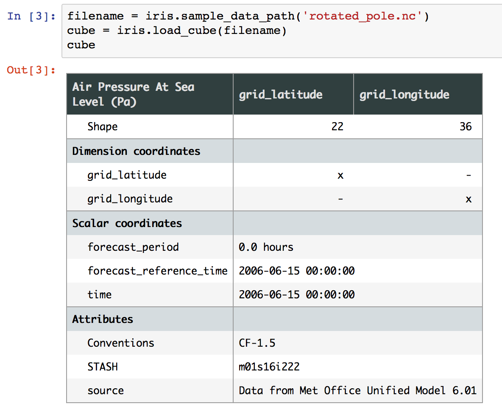

What’s new in Iris 2.1¶
- Release
2.1
- Date
2018-06-06
This document explains the new/changed features of Iris in version 2.1 (older “What’s New” release notes can be found here.)
Iris 2.1 dependency updates¶
The cf_units dependency was updated to cf_units
v2.0. cf_units v2 is almost entirely backwards compatible with v1. However the ability to preserve some aliased calendars has been removed. For this reason, it is possible that NetCDF load of a variable with a “standard” calendar will result in a saved NetCDF of a “gregorian” calendar.Iris updated its time-handling functionality from the netcdf4-python
netcdftimeimplementation to the standalone module cftime. cftime is entirely compatible with netcdftime, but some issues may occur where users are constructing their own datetime objects. In this situation, simply replacingnetcdftime.datetimewithcftime.datetimeshould be sufficient.Iris now requires version 2 of Matplotlib, and
>=1.14of NumPy. Full requirements can be seen in the requirements directory of the Iris’ the source.
Iris 2.1 features¶
Added
repr_htmlfunctionality to theCubeto provide a rich html representation of cubes in Jupyter notebooks. Existing functionality ofprint(cube)is maintained.Updated
iris.cube.Cube.name()to return a STASH code if the cube has one and no other valid names are present. This is now consistent with the summary information fromiris.cube.Cube.summary().The partial collapse of multi-dimensional auxiliary coordinates is now supported. Collapsed bounds span the range of the collapsed dimension(s).
Added new function
iris.cube.CubeList.realise_data()to compute multiple lazy values in a single operation, avoiding repeated re-loading of data or re-calculation of expressions.The methods
iris.cube.Cube.convert_units()andiris.coords.Coord.convert_units()no longer forcibly realise the cube data or coordinate points/bounds. The converted values are now lazy arrays if the originals were.Added
iris.analysis.trajectory.interpolate()that allows you to interpolate to find values along a trajectory.It is now possible to add an attribute of
missing_valueto a cube (Issue #1588).Iris can now represent data on the Albers Equal Area Projection, and the NetCDF loader and saver were updated to handle this. (Issue #2943)
The
Mercatorprojection has been updated to accept thestandard_parallelkeyword argument (PR #3041).
Bugs fixed¶
All var names being written to NetCDF are now CF compliant. Non alpha-numeric characters are replaced with ‘_’, and var names now always have a leading letter (PR #2930).
A cube resulting from a regrid operation using the iris.analysis.AreaWeighted regridding scheme will now have the smallest floating point data type to which the source cube’s data type can be safely converted using NumPy’s type promotion rules.
iris.quickplotlabels now honour the axes being drawn to when using theaxeskeyword (PR #3010).
Incompatible changes¶
The deprecated
iris.experimental.umwas removed. Please use consider using mule as an alternative.This release of Iris contains a number of updated metadata translations. See [this changelist](https://github.com/SciTools/iris/commit/69597eb3d8501ff16ee3d56aef1f7b8f1c2bb316#diff-1680206bdc5cfaa83e14428f5ba0f848) for further information.